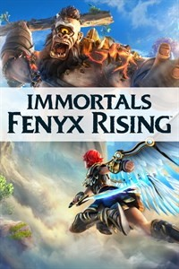

Introdução
Immortals Fenyx Rising" é um videogame de ação e aventura desenvolvido pela Ubisoft e lançado em dezembro de 2020 para várias plataformas, incluindo PlayStation, Xbox, Nintendo Switch, PC e o já cancelado Stadia. O jogo é ambientado em um mundo de fantasia inspirado na mitologia grega, onde os jogadores assumem o papel de Fenyx, um semideus que deve salvar os deuses gregos e seu lar, a Ilha Dourada, do titã Tifão(originalmente Typhon).
Ubisoft
A Ubisoft, fundada em 1986 na França, é uma das maiores desenvolvedoras de videogames do mundo. Conhecida por franquias como Assassin's Creed, Far Cry, Tom Clancy's e Just Dance, destaca-se por seus vastos mundos abertos. Recentemente, enfrentou controvérsias sobre ambiente de trabalho e problemas técnicos em alguns jogos, mas continua a inovar e investir em novas tecnologias e modelos de negócios.